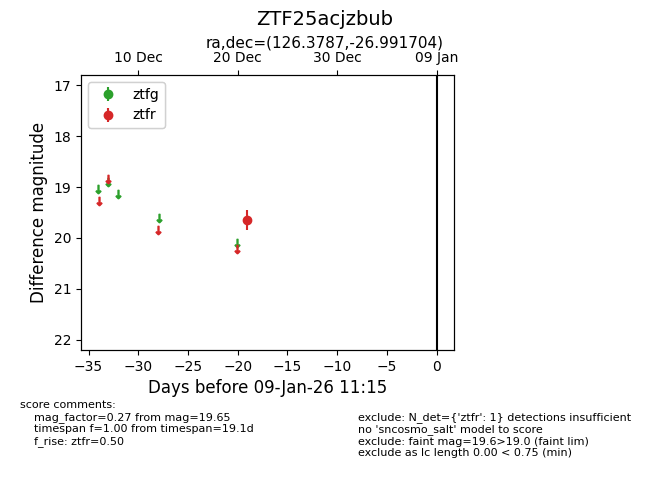
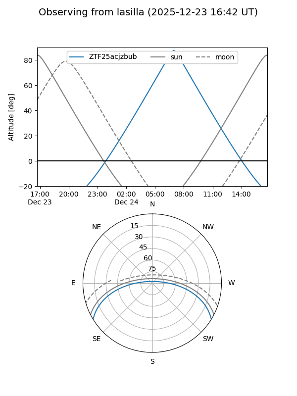
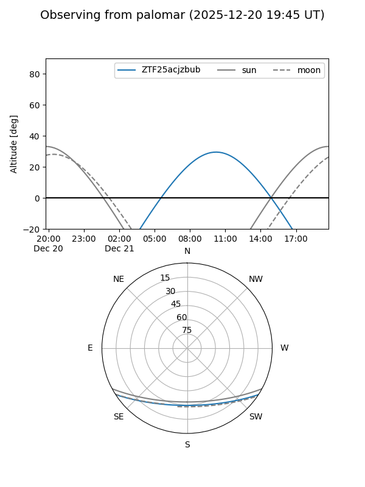

ZTF25acjzbub
Target ZTF25acjzbub at 2026-01-09 12:49
Aliases and brokers:
FINK: link
Lasair: link
ALeRCE: link
alt names
ZTF25acjzbub (ztf,fink_ztf)
Coordinates:
equatorial (ra, dec) = 126.3787,-26.99170
equatorial (HMS+DMS) = 08:25:30.88,-26:59:30.13
galactic (l, b) = (247.6472,+6.28738)
Flags:
Photometry:
last ztfr=19.65
1 ztfr detections
Lightcurve

Visibility


Additional plots